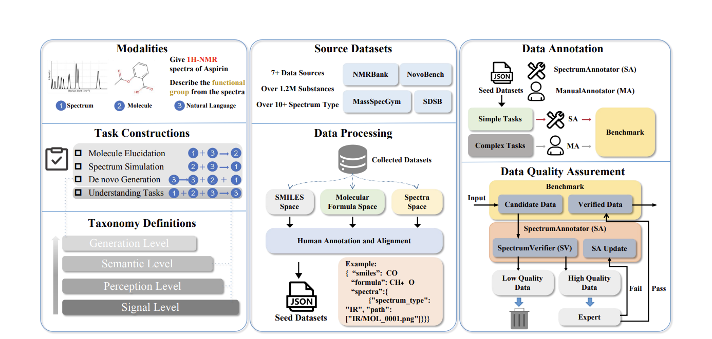
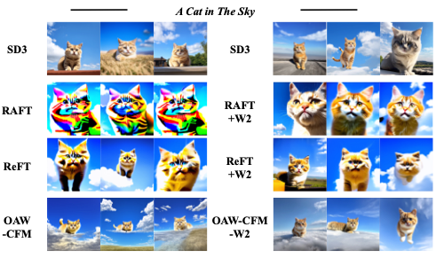
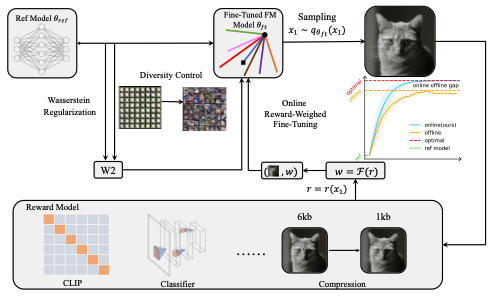
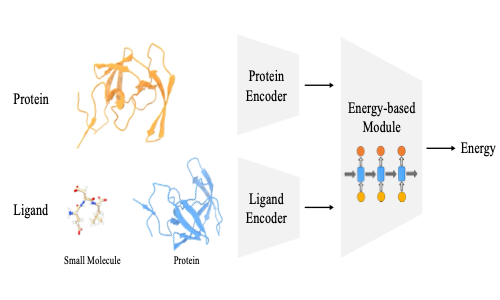
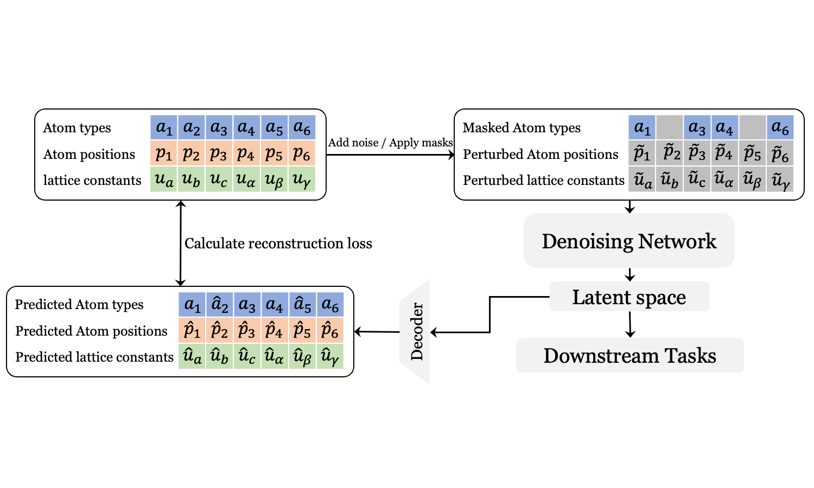
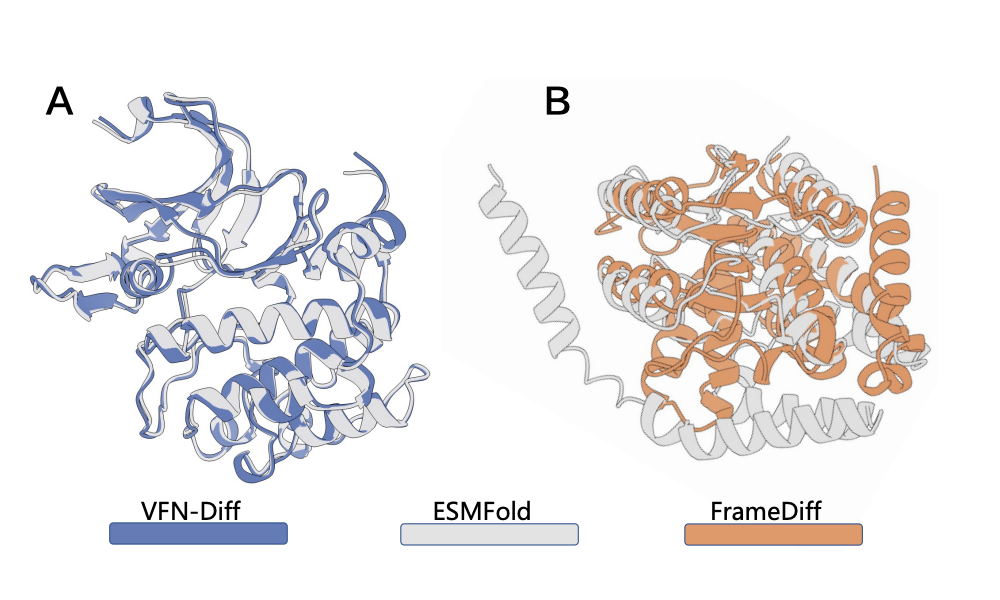

|
Shuaike Shen 沈帅克
I am a first-year PhD student at the Computational Biology
Department, part of the
School of Computer
Science at Carnegie
Mellon University,
where I work on AI for Science and Computational Biology.
|

|
Research InterestsI am keenly interested in research topics associated with AI for Science and various Generative Models. My prior research experience encompasses protein design, molecule design, crystal models and advanced generative models. If you are interested in my research, please feel free to email me at shenshuaike256 at gmail dot com or shuaikes at andrew dot cmu dot edu Publications* denotes equal contribution and † denotes corresponding author. |
|
 |
SpectrumWorld: Artificial
Intelligence Foundation for Spectroscopy
Zhuo Yang*, Jiaqing Xie*, Shuaike Shen, Daolang Wang, Yeyun Chen, Ben Gao, Shuzhou Sun, Biqing Qi, Dongzhan Zhou, Lei Bai, Linjiang Chen, Shufei Zhang, Jun Jiang†, Tianfan Fu†, Yuqiang Li† Under review, 2025 arXiv SpectrumLab, a pioneering unified platform designed to systematize and accelerate deep learning research in spectroscopy. |

|
From Sentences to Sequences:
Rethinking Languages in Biological System
Ke Liu*, Shuaike Shen*, Hao Chen† Under review, 2025 arXiv By viewing biomolecules' 3D structures as sentence semantics and considering the strong correlations between their components, we emphasize structural evaluation and show the applicability of auto-regressive modeling in biological language. |
|
 |
Training Text-to-Image Flow Models
on Self-Generated Data
Jiajun Fan, Shuaike Shen, Chaoran Cheng, Chumeng Liang, Ge Liu† Under review, 2025
|
|
 |
Online Reward-Weighted Fine-Tuning
of Flow Matching with Wasserstein Regularization
Jiajun Fan, Shuaike Shen, Chaoran Cheng, Yuxin Chen, Chumeng Liang, Ge Liu† ICLR, 2025 paper , project page The Wasserstein-2 distance is used to approximate the KL divergence to implement the online RL algorithm to fine-tune the Flow Matching model, solving the model collapse problem. |

|
A Denoising Pre-training Framework
for Accelerating Novel Material Discovery
Shuaike Shen*, Ke Liu*, Muzhi Zhu, Hao Chen† AAAI, 2025 paper , project page Purpose Denoising Pre-training Framework to accelerate the novel material discovery. |
|
 |
Physics-Informed Neural Networks
for Unsupervised Binding Energy Prediction
Ke Liu*, Shuaike Shen*, Hao Chen† Under review, 2024 Efficient protein binding energy prediction model derived from energy conservation laws. |
|
 |
Boost Your Crystal Model with
Denoising Pre-training
Shuaike Shen*, Ke Liu*, Muzhi Zhu, Hao Chen† ICML AI for Scienece Workshop, 2024 openreview Using Denoising Pre-triaing Framework (DPF) to boost the performence of crystal model, which can be easily adapted to any invariant encoder. |

|
Floating Anchor Diffusion Model for
Multi-motif Scaffolding
Ke Liu*, Shuaike Shen*, Weian Mao*, Xiaoran Jiao, Zheng Sun, Hao Chen† Chunhua Shen† ICML, 2024 arXiv, project page Treat multiple motifs as independent rigid bodies, which can translate and rotate independently. FADiff solves multi motif scaffolding problem and achieve super high design ability, novelty and diversity. |
|
 |
De novo Protein Design Using
Geometric Vector Field Networks
Weian Mao*, Zheng Sun*, Muzhi Zhu*, Shuaike Shen, Lin Yuanbo Wu, Hao Chen† Chunhua Shen† ICLR Spotlight, 2024 arXiv , project page We propose a novel structure graph encoder, which can address the atom representation bottleneck observed in traditional IPA encoders. |
Research Experience |
AI for Science Center, Shanghai AI Lab, Shanghai, ChinaResearch Intern(May.2025 - Aug.2025), Advisors: Biqing Qi & Yuqiang Li Working on LLM for molecular spectra and molecular foundation model. |
Computer Science & Biochemistry, University of Illinois at Urbana-Champaign, Urbana, U.S.Research Intern(May.2024 - Mar.2025), Advisors: Prof. Ge Liu & Prof. Nicholas Ching Hai Wu Working on protein co-design and developing online Reinforcement Learning algorithm for Flow Matching models. |
State Key Lab of CAD & CG, Zhejiang University, Hangzhou, ChinaResearch Assistant(Oct.2022 - May.2024), Advisors: Prof. Chunhua Shen & Prof. Hao Chen Working on protein design, biomolecules interaction and material science. |
Education |
PhD Student, Carnegie Mellon University(Aug.2025 - Present)Computational Biology, Computational Biology Department, School of Computer Science |
Bachelor of Engineering, Zhejiang University(Sep.2021 - June.2025)Mixed Class of Chu Kochen Honors College, Computer Science and Technology |
|
Feel free to steal this website's source code. Do not scrape the HTML from this page itself, as it includes analytics tags that you do not want on your own website — use the github code instead. Also, consider using Leonid Keselman's Jekyll fork of this page. |